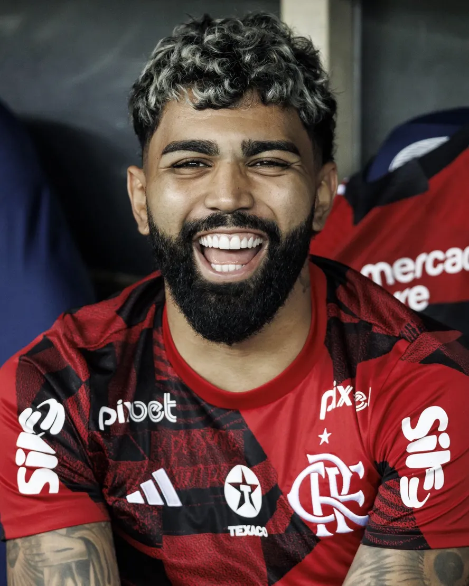

Eu sou gabriel barbosa_
Eu jogo futebol Gabriel Barbosa, mais conhecido como Gabigol, é um jogador de futebol brasileiro nascido em 30 de agosto de 1996, na cidade do Rio de Janeiro. Ele começou sua carreira nas categorias de base do Santos FC, onde se destacou bastante. Depois, transferiu-se para o Inter de Milão, na Itália, mas foi no Flamengo que conquistou grande destaque, especialmente por seus gols importantes e títulos, como a Copa Libertadores e o Campeonato Brasileiro. Gabigol é conhecido por sua habilidade de finalização e por ser um atacante bastante decisivo.